20. Práca s obrázkami¶
Pripomeňme, ako sme doteraz pracovali s obrázkami v grafickej ploche pomocou tkinter. Najprv sme si vytvorili grafický objekt a ten sme potom umiestnili niekam do grafickej plochy, napríklad:
obr = tkinter.PhotoImage(file='pyton.png')
obr_id = canvas.create_image(500, 100, image=obr)
Takýto obrázok môžeme po ploche posúvať, vymazať, resp. vymeniť za iný, napríklad:
canvas.move(obr_id, 30, -5)
obr1 = tkinter.PhotoImage(file='java.png')
canvas.itemconfig(obr_id, image=obr1)
canvas.delete(obr_id)
Nič viac sa s obrázkami v tkinter robiť nedá. Ak budeme chcieť vykresľované obrázky nejako meniť, môžeme na to využiť knižničný modul PIL, t.j. Python Imaging Library. Napríklad, chceme zobrazený obrázok v grafickej ploche otočiť na mieste, alebo aj trochu zmenšiť. Zoberieme pôvodný súbor s obrázkom, prečítame si ho do pamäti, tu ho otočíme, zmenšíme a prípadne ešte nejako inak upravíme a takýto zmenený obrázok buď uložíme do (iného) súboru, z ktorého ho prečíta tkinter (pomocou PhotoImage), alebo, uvidíme neskôr, priamo tento obrázok prenesieme do tkinter bez toho aby sme ho museli ukladať do súboru.
Takže Python Imaging Library slúži na prípravu alebo úpravu obrázkových súborov, ktoré potom môžeme využiť, napríklad v programoch pre tkinter.
Python Imaging Library¶
Aby ste mohli pracovať s knižnicou PIL (Python Imaging Library), musíte mať nainštalovaný modul Pillow, keďže nie je súčasťou štandardnej inštalácie Pythonu. Základné informácie o inštalácii nájdete na stránke Inštalácia Pillow. Pod operačným systémom Windows (podobne aj v iných OS) treba v príkazovom okne cmd alebo v nejakom termináli spustiť príkaz:
> pip install pillow
Je možné, že bude od vás požadovať administrátorské práva, resp. spustiť cmd ako správca.
Po úspešnej inštalácii budete musieť vo svojich programoch, ktoré chcú pracovať s touto knižnicou, zadávať:
from PIL import Image
Teraz je Python pripravený pracovať s obrázkovými objektmi. Základné informácie o tomto module môžete nájsť na webe Pillow.
Vytvorenie obrázkového objektu¶
Knižnica Image umožňuje pracovať s rastrovými obrázkami priamo v pamäti. Obrázkové objekty (inštancie triedy Image.Image) sa vytvárajú buď prečítaním obrázkového súboru, alebo vytvorením nového obrázka (jednofarebný obdĺžnik), alebo ako výsledok niektorých operácií s nejakými už existujúcimi obrázkami.
Obrázkový objekt vytvoríme prečítaním obrázkového súboru z disku pomocou príkazu:
>>> obr = Image.open('meno súboru')
Obrázkový súbor môže byť skoro ľubovoľného grafického typu, napríklad png, bmp, jpg, gif, … Aby príkaz Image.open() mal šancu nájsť tento súbor, buď sa bude nachádzať v tom istom priečinku na disku ako náš program, alebo mu zadáme relatívnu alebo absolútnu cestu, napríklad:
>>> obr1 = Image.open('tiger.bmp')
>>> obr2 = Image.open('obrazky/slon.jpg')
>>> obr3 = Image.open('d:/user/data/python.png')
Na testovanie niektorých príkladov v prednáške, môžete využiť obrázky z priečinku obrázkov obrazky.zip.
Po prečítaní súboru z daného obrázkového objektu môžeme zistiť niektoré jeho parametre, napríklad:
>>> obr1
<PIL.BmpImagePlugin.BmpImageFile image mode=RGB size=384x256 at 0x2C4F710>
>>> obr1.size
(384, 256)
>>> obr1.width
384
>>> obr1.height
256
>>> obr1.mode
'RGB'
Obrázky môžu byť uložené v niekoľkých rôznych módoch: pre nás budú zaujímavé len dva z nich 'RGB' a 'RGBA' pre „obyčajné“ rgb (poznáme to ako 3 celé čísla z intervalu <0, 255> pre zložky red, green, blue) a rgb, ktoré si pamätá aj priesvitnosť, tzv. alfa-kanál, teda rgba (budú to štyri čísla pre red, green, blue a alfa-kanál). RGBA uvidíme neskôr.
Veľmi často používaným príkazom tri testovaní a ladení bude:
>>> obr1.show()
ktorý zobrazí momentálny obsah nami pripravovaného obrázka v nejakom externom programe - toto závisí od nastavení vo vašom operačnom systéme. Samotný PIL obrázky zobrazovať nevie, vie ich prečítať zo súboru, resp. zapísať do súboru, prípadne ich nejako meniť. Aby sme ich nemuseli pri ladení stále ukladať do súboru a ten si potom prezerať v nejakom štandardnom prezerači obrázkov, PIL za nás tento prezerač spustí aj s pripraveným obrázkom.
Obrázkový objekt môžeme vytvoriť aj pomocou funkcie new(), ktorej zadáme „mód“ (t.j. 'RGB' alebo 'RGBA'), veľkosť obrázka v pixeloch ako dvojicu (šírka, výška) a prípadne farbu, ktorou sa tento obrázok zafarbí (inak by bol čierny):
>>> obr4 = Image.new('RGB', (300, 200), 'pink')
Vytvorí nový objekt obr4 - obrázok veľkosti 300x200 pixelov (šírka 300, výška 200), ktorý bude celý ružový. Zrejme tento objekt je zatiaľ iba v pamäti a nie je v žiadnom súbore.
Ako farbu pixelov tu môžeme okrem mena farby uviesť aj reťazec známy z tkinter, ktorý obsahuje cifry v 16-ovej sústave, napríklad '#12a4ff', alebo trojicu rgb (teda tuple) v tvare, napríklad (120, 198, 255). Neskôr tu uvidíme aj štvoricu pre rgba.
Ak by sme chceli vytvoriť nový obrázok rovnakej veľkosti akú má niektorý už existujúci objekt, môžeme využiť jeho atribút size, napríklad:
>>> obr4 = Image.new('RGB', obr1.size, '#ffffff')
vytvorí obrázkový objekt veľkosti 384x256 (teda rovnaká veľkosť ako obr1), pričom všetky jeho pixely budú biele.
Uloženie obrázka do súboru¶
Metóda save('meno súboru') uloží obrázok do súboru s ľubovoľnou príponou. Takto môžeme veľmi ľahko zmeniť grafický formát obrázku. Napríklad:
>>> obr1.save('tiger.png')
>>> obr4.save('temp/prazdny.jpg')
Obrázok obr1, ktorý mal pôvodne bitmapový formát (prípona .bmp) sa zapísal do .png súboru. Obrázok obr4, ktorý sme vytvorili pomocou metódy new sme zapísali do .jpg súboru.
Uvedomte si, že ak nejaký obrázok chceme len prečítať a hneď ho zapísať do súboru (možno s inou príponou), môžeme to priamo zapísať takto:
>>> Image.open('obrazok.jpg').save('obrazok.png')
Na disku sa teraz vytvorila kópia pôvodného obrázka v súbore s novou príponou (v novom formáte).
Zmena veľkosti obrázka¶
Obrázku vieme zmeniť veľkosť, pričom ho takto roztiahneme, resp. stlačíme tak, aby sa zmestil do nových rozmerov. Zapíšeme to, napríklad takto:
>>> obr2 = obr1.resize((nova_sirka, nova_vyska))
Vytvorí sa nový obrázok so zadanými rozmermi, pôvodný ostáva bez zmeny. Napríklad:
>>> obr3 = obr1.resize((obr1.width * 3, obr1.height * 3))
>>> obr1 = obr1.resize((obr1.width // 2, obr1.height // 2))
Obrázok obr3 má trojnásobné rozmery pôvodného obrázka, pričom obr1 sa potom zmenší na polovičné rozmery. Napríklad, ak máme takýto obrázok 'prasiatko.png':
{kind=link}
keď mu zmeníme veľkosť bez zachovania pomeru strán:
obr1 = Image.open('prasiatko.png')
obr2 = obr1.resize((300, 100))
dostávame:
{kind=link}
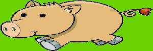
ale zmenšenie oboch strán na tretinu:
sirka, vyska = obr1.size
obr3 = obr1.resize((sirka // 3, vyska // 3))
vyzerá takto:
{kind=link}
Uvedomte si, že zmenšovaním obrázka sa nejaká informácia stráca, takže, keď mu po zmenšení vrátime pôvodnú veľkosť:
obr4 = obr1.resize((sirka // 10, vyska // 10)).resize((sirka, vyska))
dostávame takto pokazený obrázok:
{kind=link}
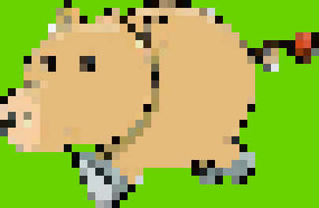
Otáčanie a preklápanie¶
Obrázok môžeme otáčať, resp. preklápať pomocou metódy transpose():
>>> novy_obr = obr1.transpose(Image.Transpose.FLIP_LEFT_RIGHT) # preklopí vodorovne
>>> novy_obr = obr1.transpose(Image.Transpose.FLIP_TOP_BOTTOM) # preklopí zvislo
>>> novy_obr = obr1.transpose(Image.Transpose.ROTATE_90) # otočí o 90 stupňov
>>> novy_obr = obr1.transpose(Image.Transpose.ROTATE_180) # otočí o 180 stupňov
>>> novy_obr = obr1.transpose(Image.Transpose.ROTATE_270) # otočí o 270 stupňov
Zrejme sa pri tomto môžu niekedy zmeniť rozmery výsledného obrázka. Pôvodný obrázok zostáva bez zmeny. Vyskúšajte tieto operácie s nejakým konkrétnym obrázkom. Hodnotami konštánt Image.Transpose.FLIP_LEFT_RIGHT, Image.Transpose.FLIP_TOP_BOTTOM, Image.Transpose.ROTATE_90, … sú čísla 0, 1, … Teda, namiesto zápisu obr1.transpose(Image.Transpose.ROTATE_90) môžeme zapísať obr1.transpose(2).
Obrázky môžeme otáčať nielen o pravouhlé uhly 90, 180 a 270, ale aj o ľubovoľný iný uhol, pomocou metódy rotate:
>>> novy_obr = obr1.rotate(uhol)
Uhol zadávame v stupňoch v protismere otáčania hodinových ručičiek. Ak otočíme obrázok prasiatka obr1 napríklad o 30 stupňov:
obr5 = obr1.rotate(30)
dostávame:
{kind=link}
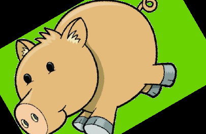
Výsledný obrázok bude mať pôvodné rozmery obr1, teda nejaké otočené časti sa pritom stratia a ešte pribudnú aj nejaké čierne oblasti. Ak ale zadáme rotate s ďalším pomenovaným parametrom expand:
obr6 = obr1.rotate(30, expand=True)
výsledný obrázok sa zväčší tak, aby sa teraz do neho zmestil celý otočený pôvodný obrázok. Teraz je ešte lepšie vidieť nové čierne oblasti:
{kind=link}
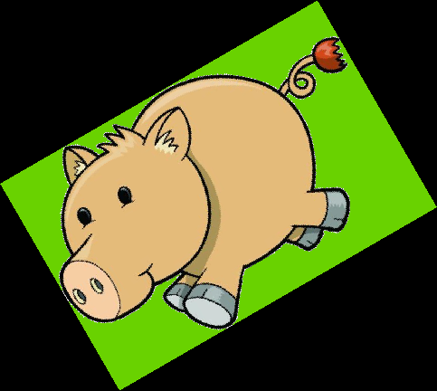
Oblasť v obrázku¶
Aby sme mohli pracovať s operáciami, ktoré manipulujú nie s celým obrázkom, ale len s jeho časťou, musíme sa naučiť, ako PIL rozumie pojmu oblasť. Oblasť definujeme ako štvoricu (tuple) štyroch celých čísel (x, y, x+šírka, y+výška), kde (x, y) je poloha ľavého horného pixelu oblasti (riadky aj stĺpce indexujeme od 0) a šírka a výška sú rozmery oblasti v pixeloch, t.j. počet stĺpcov a riadkov pixelov. Potom zápisy:
oblast1 = (0, 0) + obr1.size
oblast2 = 10, 10, 210, 140
sirka, vyska = obr1.size
oblast3 = (sirka//3, 0, 2*sirka//3, vyska//2)
definujú tri oblasti: oblast1 popisuje kompletnú veľkosť obrázka obr1; oblast2 popisuje oblasť, ktorej ľavý horný roh je v (10, 10) a jeho veľkosť je 200 x 130 pixelov; tretia premenná oblast3 popisuje takúto oblasť: ak by sme obr1 rozrezali na tri rovnaké zvislé časti a každú z nich by sme ešte rozdelili vodorovne na polovicu, tak oblasť popisuje hornú polovicu zo strednej zvislej časti.
Oblasť využijeme v operácii crop, pomocou ktorej z obrázka odkopírujeme zadaný obdĺžnikový výsek. Táto operácia nemodifikuje pôvodný obrázok, ale vytvorí nový ďalší obrázok zadaných rozmerov:
>>> novy_obr = povodny_obr.crop(oblasť)
Touto metódou vzniká nový obrázok zadaných rozmerov (podľa oblasti) s vykopírovaným obsahom. Pôvodný obrázok ostáva bez zmeny. Ak je časť oblasti mimo pôvodného obrázka, v novom obrázku tu budú doplnené čierne (resp. pre rgba priesvitné) pixely.
Napríklad:
>>> obr1a = obr1.crop((60, 50, 220, 200))
>>> obr1a.size
(160, 150)
Ak vieme pozíciu (x, y) ľavého horného pixelu oblasti a jej šírku sir a výšku vys, môžeme kopírovanie zapísať aj takto:
>>> x, y, sir, vys = 60, 50, 160, 150
>>> obr1a = obr1.crop((x, y, x + sir, y + vys))
Pomocou metódy crop() sme vytvorili nový obrázkový objekt obr1a. Na nasledovnom obrázku vidíme pôvodný obrázok aj nový s kópiou jeho časti (oblasti):
{kind=link}
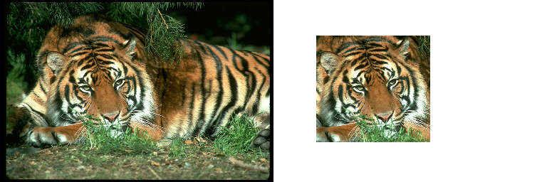
Nasledovný úsek programu, rozstrihá nejaký obrázok na rovnako veľké časti:
obr1 = Image.open('tiger.bmp')
sirka, vyska = 150, 70
i = 0
for y in range(0, obr1.height, vyska):
for x in range(0, obr1.width, sirka):
obr1.crop((x, y, x+sirka, y+vyska)).save(f'tiger{i}.png')
i += 1
Tieto rozstrihané kúsky sa postupne uložia do obrázkových súborov s menami 'tiger0.png', 'tiger1.png', 'tiger2.png', … Zrejme záleží od veľkosti pôvodného obrázka obr1. Ak boli jeho rozmery, napríklad 384x256, tak sa vytvorí 3x4 menších obrázkov (veľkosti 150x70) a niektoré z nich, ktoré pretŕčajú z pôvodného obrázka, budú doplnené čiernymi oblasťami.
Vkladanie do obrázka¶
Niekedy môže vzniknúť situácia, keď potrebujeme do jedného obrázka na nejaké jeho miesto vložiť iný obrázok, resp. viacero obrázkov zložiť dokopy do jedného. Na to slúži metóda paste, pomocou ktorej sa vloží obrázok na nejaké miesto iného obrázka (akoby sme opečiatkovali jeden obrázok do druhého):
>>> obr1.paste(obr2, (x, y))
Tento príkaz modifikuje pôvodný obsah obrázka obr1. Obrázok obr2 sa „opečiatkuje“ do obr1, pričom druhý parameter určí pozíciu (x, y) v obr1, kam sa umiestni obr2, t.j. jeho ľavý horný pixel. Uvedomte si, že táto metóda nevracia žiadnu hodnotu (teda vráti None) a preto nemá zmysel jej výsledok priraďovať do nejakej premennej.
Ukážme si paste na príklade. Na obrázok prasiatka chceme vložiť malý obrázok mašle:
obr1 = Image.open('prasiatko.png')
obr2 = Image.open('masla.png')
obr1.paste(obr2, (150, 100))
Dostávame takto zmenený obr1:
{kind=link}
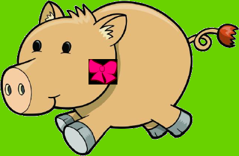
Hoci má mašľa niektoré časti škaredo začiernené (asi mali byť priesvitné), môžeme vidieť princíp, ako to funguje.
Ešte ukážme, ako zlepiť dva obrázky tesne vedľa seba. Predpokladáme, že sú rovnako vysoké (majú rovnaký height). Pre jednoduchosť druhý obrázok vytvoríme z prvého len preklopením vo vodorovnom smere. Samotné zlepenie vyrobíme do obr3 tak, že ho najprv vyrobíme prázdny (so šírkou, ktorá je súčtom šírok oboch obrázkov) a potom ich prekopírujeme na správne pozície:
obr1 = Image.open('prasiatko.png')
obr2 = obr1.transpose(Image.Transpose.FLIP_LEFT_RIGHT)
obr3 = Image.new('RGB', (obr1.width+obr2.width, obr1.height))
obr3.paste(obr2, (0, 0))
obr3.paste(obr1, (obr1.width, 0))
Dostávame takto vytvorený obr3:
{kind=link}
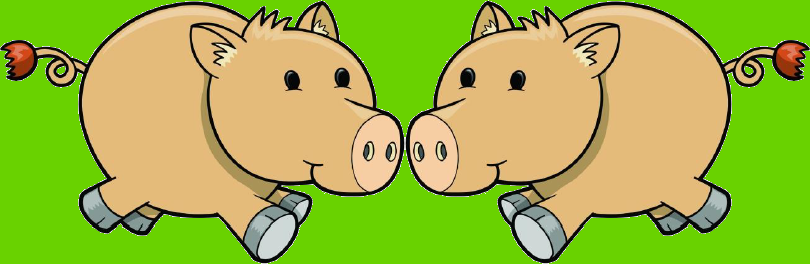
Metóda paste() má aj iné využitie:
>>> obr1.paste(farba, oblasť)
V tomto prípade je farba nejakou farbou a táto sa vyleje do špecifikovanej oblasti (nakreslí zafarbený obdĺžnik). Napríklad:
obr1 = Image.open('prasiatko.png')
obr1.paste('purple', (150, 100, 350, 200))
Dostávame takto zmenený obr1:
{kind=link}
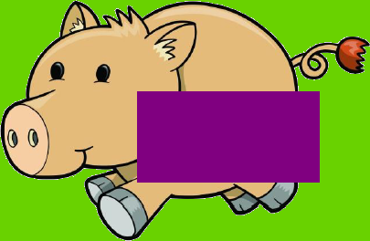
Priesvitnosť¶
Už sme spomínali, že niektoré obrázky môžu byť v móde 'RGBA', čo znamená, že každý pixel si okrem farby (trojice čísel) pamätá ešte tzv. alfa-kanál, čo je tiež celé číslo z intervalu <0, 255>. Tento štvrtý bajt nesie informáciu o tom, či je daný pixel priesvitný alebo nepriesvitný, resp. nakoľko je priesvitný. Hodnota 255 označuje úplne nepriesvitný pixel, teda vidíme len danú farbu pixela. Hodnota 0 označuje úplne priesvitný pixel a vtedy z farby nevidíme nič (na farbe rgb nezáleží), vidíme len to, čo sa nachádza na obrázku pod ním. Hodnoty medzi tým označujú mieru priesvitnosti.
Keď sme si doteraz pozerali obrázky, ktoré mali nejaké časti priesvitné, tak sme najčastejšie namiesto toho videli čierne zafarbené oblasti. Podobne, keď sme takéto obrázky pečiatkovali (paste) do nejakých iných, namiesto priesvitných sme dostali čierne pixely. Operácie crop() aj rotate() môžu vytvoriť priesvitné pixely za hranicou pôvodných obrázkov. Operácia paste() ale zatiaľ správne nezlučuje priesvitné pixely s pôvodným obrázkom, tak ako by sme očakávali. Na to musíme použiť ďalšiu verziu volania metódy paste:
>>> obr1.paste(obr2, kam, obr2)
V tomto prípade predpokladáme, že obr2 je v móde rgba a teda obsahuje pre každý pixel aj alfa-kanál (inak by tento príkaz spadol na chybe). Keďže obrázok mašle je v móde rgba, môžeme prasiatku vložiť mašľu správnym spôsobom:
obr1 = Image.open('prasiatko.png')
obr2 = Image.open('masla.png')
obr2 = obr2.resize(2*i for i in obr2.size)
obr1.paste(obr2, (150, 100), obr2)
Všimnite si, že sme mašľu najprv dvojnásobne zväčšili (s využitím generátorovej notácie) a potom sme dostali takýto obr1:
{kind=link}
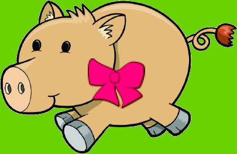
Poznámky¶
Keďže príkaz obr.paste(...) modifikuje pôvodný obrázok, niekedy môžeme využiť príkaz copy na vytvorenie kópie pôvodného obrázka ešte pred volaním paste, napríklad:
obr1 = Image.open('prasiatko.png')
obr2 = Image.open('masla.png')
obr3 = obr1.copy()
obr3.paste(obr2, (150, 100), obr2)
# obr1 ostal teraz nezmenený
Príkazy obr.crop(...) a obr.rotate(...) môžu za istých okolností vytvoriť nové čierne časti (pre 'RGB'), resp. priesvitné (pre 'RGBA'). Ak bol pôvodný obrázok typu 'RGB' a otočíme ho, takto vzniknutý obrázok nevložíme pomocou paste() s tretím parametrom. Tu nám môže pomôcť konverzný príkaz convert, pomocou ktorého môžeme obrázok previesť na správny typ. Napríklad:
obr1 = Image.open('prasiatko.png')
obr2 = Image.open('macka.png').convert('RGBA').rotate(30, expand=True)
obr1.paste(obr2, (150, 100), obr2)
Práca s jednotlivými pixelmi¶
Metóda getpixel() vráti farbu konkrétneho pixelu, napríklad:
>>> obr1.getpixel((108, 154))
(228, 187, 122)
Metóda putpixel() zmení konkrétny pixel v obrázku. Napríklad:
>>> obr1.putpixel((108, 154), (255, 0, 0))
Zafarbí daný pixel na červeno. V tomto prípade musí byť farba zadaná ako trojica (resp. pre rgba ako štvorica) čísel od 0 do 255. Ak v obrázku prasiatka zafarbíme v nejakej oblasti 500 náhodných bodiek:
import random
for i in range(500):
xy = random.randrange(200, 300), random.randrange(50, 150)
farba = (255, 0, 0)
obr1.putpixel(xy, farba)
vyzerá to nejako takto:
{kind=link}
Nasledovný zápis (generátorová notácia) zistí množinu všetkých farieb v obrázku:
>>> mn = {obr1.getpixel((x, y)) for x in range(obr1.width) for y in range(obr1.height)}
>>> len(mn)
17653
Rozoberanie animovaných gif¶
Animovaný gif súbor sa skladá zo série za sebou idúcich obrázkov. Načítanie takéhoto súboru pomocou Image.open() nám automaticky sprístupní prvú fázu (má poradové číslo 0). Ak potrebujeme pracovať s i-tou fázou animácie (i-tym obrázkom série), použijeme metódu obr.seek(i).
Nasledujúca časť programu otvorí obrázkový súbor s animáciou napríklad 'vtak.gif', ktorý sa skladá z neznámeho počtu obrázkov. Postupne všetky tieto fázy uloží do samostatných obrázkových súborov vo formáte 'png':
gif = Image.open('vtak.gif')
i = 0
while True:
gif.save(f'vtak/vtak{i}.png')
try:
i += 1
gif.seek(i)
except EOFError:
break
Pre tento súbor 'vtak.gif' s animovaným obrázkom:
{kind=link}
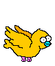
dostaneme v priečinku vtak túto postupnosť súborov:
{kind=link}
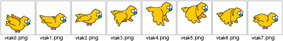
Táto verzia rozoberania obrázkov vo formáte gif má tú výhodu, že nespadne ani pri iných formátoch obrázka. Napríklad, by sa korektne takto spracoval aj png obrázok: cyklus by prešiel iba raz a skončil. Vieme to zapísať aj inak, ale fungovať to bude iba pre gif (pre iné formáty to môže spadnúť):
gif = Image.open('vtak.gif')
for i in range(gif.n_frames):
gif.seek(i)
gif.save(f'vtak/vtak{i}.png')
PIL a tkinter¶
PIL vie spolupracovať aj s tkinter, takže pripravený obrázok nemusíme uložiť do súboru, ktorý potom pomocou PhotoImage načítame do tkinter (je to dosť pomalé a programy by to zdržovalo) - ale priamo z PIL prekonvertujeme obrázok do tkinter.
Pripomeňme si, ako sme kreslili obrázky v tkinter:
import tkinter
canvas = tkinter.Canvas()
canvas.pack()
tk_img = tkinter.PhotoImage(file='pyton.png')
canvas.create_image(200, 150, image=tk_img)
Zvolili sme si obrázok pyton.png, ktorý má niektoré časti priesvitné.
{kind=link}
Je veľmi dôležité si uvedomiť, že tkinter si príkazom create_image() zapamätá referenciu na tento obrázok, ale Pythonu o tom „nedá vedieť“. Lenže Python je priveľmi usilovný v upratovaní nepoužívanej pamäti a ak premennej tk_img zmeníme obsah, alebo ju zrušíme, Python z pamäte obrázok vyhodí, lebo za každú cenu chce upratať nepotrebné informácie. Môžete vyskúšať po spustení predchádzajúceho kódu zmeniť obsah premennej:
>>> tk_img = 0
Väčšinou obrázok zmizne okamžite, niekedy treba ešte niečo nakresliť a až potom sa obrázok stratí, napríklad:
>>> tk_img = 0
>>> canvas.create_line(0, 0, 300, 300)
Podobný efekt dosiahneme aj vtedy, keď tento program zapíšeme bez pomocnej premennej tk_img:
import tkinter
canvas = tkinter.Canvas()
canvas.pack()
canvas.create_image(200, 150, image=tkinter.PhotoImage(file='pyton.png'))
Python aj v tomto prípade obrázok najprv prečíta vo formáte tkinter.PhotoImage(), pošle ho ako skutočný parameter do create_image(), lenže, keďže naňho nikto neodkazuje (žiadna premenná neobsahuje referenciu), obrázok okamžite uvoľní. Z tohto dôvodu tento program nezobrazí žiaden obrázok.
ImageTk¶
Obrázky vieme načítať a vykresliť aj v PIL.Image, ale tieto dva formáty sú navzájom nekompatibilné. Napríklad:
from PIL import Image
obr1 = Image.open('pyton.png')
obr1.show()
Ak budeme chcieť obrázky vytvorené alebo prečítané v PIL neskôr v grafickej ploche vykresľovať a potom ich aj pomocou tkinter meniť a posúvať, budeme musieť použiť nejakú konverziu z PIL do tkinter. V tomto prípade využijeme z knižnice PIL ďalší podmodul ImageTk. Môžeme to zapísať takto:
from PIL import Image, ImageTk
import tkinter
canvas = tkinter.Canvas()
canvas.pack()
obr1 = Image.open('pyton.png')
tk_img = ImageTk.PhotoImage(obr1) # konverzia z PIL.Image do tkinter
canvas.create_image(200, 150, image=tk_img)
Funkcia PhotoImage() z knižnice ImageTk má jeden parameter typu obrázok z Image a prerobí ho na obrázkový objekt pre tkinter. Tento objekt môžeme ešte pred prekonvertovaní pre tkinter upraviť najrozličnejšími obrázkovými metódami, s ktorými sme sa práve naučili pracovať. Môžeme napríklad zapísať:
from PIL import Image, ImageTk
import tkinter
canvas = tkinter.Canvas()
canvas.pack()
obr1 = Image.open('pyton.png')
obr2 = obr1.rotate(45, expand=True)
tk_img = ImageTk.PhotoImage(obr2)
canvas.create_image(200, 150, image=tk_img)
Často uvidíte aj veľmi kompaktný zápis, napríklad takto:
tk_img = ImageTk.PhotoImage(Image.open('pyton.png').rotate(45, expand=True))
Otáčanie obrázka, animácia¶
Využime tento kompaktný zápis na pomalé otáčanie celého obrázka:
from PIL import Image, ImageTk
import tkinter
canvas = tkinter.Canvas()
canvas.pack()
tk_id = canvas.create_image(200, 150) # zatiaľ prázdny obrázok
uhol = 0
while True:
tk_img = ImageTk.PhotoImage(Image.open('pyton.png').rotate(uhol, expand=True))
canvas.itemconfig(tk_id, image=tk_img)
uhol += 10
canvas.update()
canvas.after(100)
Všimnite si, že v tomto nekonečnom cykle stále čítame a otáčame ten istý súbor, pričom súbor by sme mohli prečítať len raz a potom ho už len otáčame:
from PIL import Image, ImageTk
import tkinter
canvas = tkinter.Canvas()
canvas.pack()
tk_id = canvas.create_image(200, 150)
obr1 = Image.open('pyton.png')
uhol = 0
while True:
tk_img = ImageTk.PhotoImage(obr1.rotate(uhol, expand=True))
canvas.itemconfig(tk_id, image=tk_img)
uhol += 10
canvas.update()
canvas.after(100)
V tomto nekonečnom cykle sa po 36 prechodoch znovu opakujú tie isté obrázky. Môžeme to prepísať tak, že tieto obrázky vypočítame len raz ešte pred samotným cyklom a uložíme ich do zoznamu. V cykle sa už budeme len odvolávať na prvky tohto zoznamu:
from PIL import Image, ImageTk
import tkinter
canvas = tkinter.Canvas()
canvas.pack()
tk_id = canvas.create_image(200, 150)
obr1 = Image.open('pyton.png')
zoz = [ImageTk.PhotoImage(obr1.rotate(uhol, expand=True)) for uhol in range(0, 360, 10)]
i = 0
while True:
canvas.itemconfig(tk_id, image=zoz[i])
i = (i + 1) % len(zoz)
canvas.update()
canvas.after(100)
Tento malý testovací program by mohol fungovať aj pre inú postupnosť obrázkov. Do podadresára vtak uložíme týchto 8 obrázkových súborov (vyrobili sme ich z animovaného gifu):
Tieto súbory prečítame a uložíme do zoznamu a otestujeme:
import tkinter
# moduly Image ani ImageTk tu nepotrebujeme
canvas = tkinter.Canvas(bg='green')
canvas.pack()
tk_id = canvas.create_image(200, 150)
zoz = [tkinter.PhotoImage(file=f'vtak/vtak{i}.png') for i in range(8)]
i = 0
while True:
canvas.itemconfig(tk_id, image=zoz[i])
i = (i + 1) % len(zoz)
canvas.update()
canvas.after(100)
Túto úlohu vieme vyriešiť aj priamo so súborom animovaný gif:
from PIL import Image, ImageTk
import tkinter
canvas = tkinter.Canvas(bg='green')
canvas.pack()
zoz = []
gif = Image.open('vtak.gif')
for i in range(gif.n_frames):
gif.seek(i)
zoz.append(ImageTk.PhotoImage(gif.convert('RGBA'))
tk_id = canvas.create_image(200, 150)
i = 0
while True:
canvas.itemconfig(tk_id, image=zoz[i])
i = (i + 1) % len(zoz)
canvas.update()
canvas.after(30)
Cvičenie¶
Poznámka
riešenia úloh ulož do jedného súboru a odovzdaj na testovací server https://vektor.fmph.uniba.sk/
testovací server tieto ulohy nebude testovať, vyrieš a odovzdaj ich aspoň 10 okrem tých, ktoré sú označené znakom -
prvé tri riadky súboru s riešením musia obsahovať:
# 20. cvicenie # student: Janko Hrasko # datum: 9.12.2025
zrejme ako študenta uvedieš svoje meno.
v odovzdaných riešeniach nepoužívaj
global
Pre niektoré úlohy budeš potrebovať súbory z priečinku obrázkov obrazky.zip.
- Napíš funkciu
novy(sirka, vyska), ktorý vytvorí nový obrázkový objekt zadanej veľkosti(sirka, vyska), ktorý je modrý. Funkcia vráti tento objekt ako svoj výsledok. Napríklad:>>> novy(200, 100).show() # zobrazí modrý obdĺžnik 200x100
- Doplň do funkcie z predchádzajúcej úlohy ďalší parameter
novy(sirka, vyska, meno_suboru=None). Ak je tento tretí parameter pri volaní zadaný, funkcia okrem návratovej hodnoty tento obrázok aj uloží do súboru s daným menom. Napríklad:>>> obr1 = novy(200, 100, 'modry.png') # vytvorí súbor modry.png >>> obr1.show()
- Napíš funkciu
ramik(meno_suboru, sirka), ktorý prečíta zadaný obrázkový súbor (napríklad'tiger.png') a vyrobí z neho nový, ktorý bude mať modrý rámik danej šírky. Funkcia vráti tento nový obrázok ako svoj výsledok. Zrejme funkcia najprv vyrobí nový prázdny modrý obrázok, ktorý bude o zadanú šírku zo všetkých strán väčší ako načítaný obrázok. Potom do tohto prázdneho obrázka opečiatkuje prečítaný obrázok. Napríklad:>>> ramik('tiger.png', 20).show()
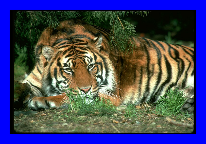
{kind=link}
- Napíš funkciu
zaramuj(meno_suboru), ktorá obrázok z daného súboru vloží do obrázka'ram.png'. Ak bude vkladaný obrázok väčší ako biele vnútro rámu, tak ho oreže na danú veľkosť (môžeš počítať s tým, že vnútro rámu má veľkosť212x321). Funkcia ako svoj výsledok vráti zarámovaný obrázok. Napríklad:>>> zaramuj('tiger2.png').show()
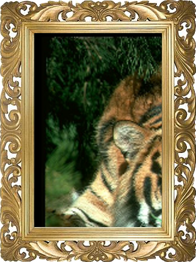
{kind=link}
- Napíš funkciu
kopia(obrazok), ktorá vyrobí kópiu pôvodného obrázka, ale tak, že ho kopíruje po jednom pixeli. Zrejme si najprv vytvoríš prázdny obrázok rovnakých rozmerov a sem budeš kopírovať pixely (pomocougetpixel()aputpixel()). Funkcia vráti tento nový obrázok ako svoj výsledok. Teraz prečítaj nejaký malý obrázok zo súboru a vyrob z neho pomocoukopia()kópiu (pre veľké obrázky to môže dosť dlho trvať). Výsledok ulož do súboru a skontroluj. Napríklad:>>> kopia(Image.open('tiger.png')).show()
- Napíš funkciu
prevrat(obrazok), ktorá vyrobí prevrátenú kópiu pôvodného obrázka (obrázok je hore nohami), ale ho kopíruje po jednom pixeli. Funkcia vráti tento nový obrázok ako svoj výsledok. Teraz prečítaj nejaký malý obrázok zo súboru a vyrob z neho nový pomocouprevrat(). Výsledok ulož do súboru a skontroluj. Napríklad:>>> prevrat(Image.open('macka.png')).show()
{kind=link}
- Napíš funkciu
sedy(obrazok), ktorá vyrobí čierno-bielu kópiu pôvodného obrázka (vypočítaš priemer zložiek(r, g, b), napríklad je to hodnotap, potom z toho vznikne nová farba(p, p, p)). Funkcia vráti tento nový obrázok ako svoj výsledok. Teraz prečítaj nejaký malý obrázok zo súboru a vyrob z neho čiernobiely pomocousedy(). Výsledok ulož do súboru a skontroluj. Napríklad:>>> sedy(obr1).show()
Napíš funkciu
stvorce(m, n), ktorá vytvorí obrázok skladajúci sa zmxnštvorcov veľkosti100x100(mradov, v každom ponštvorcov). Tieto štvorce budú zafarbené náhodnými farbami. Obrázok potom uloží do súboru'stvorce.png'. Zrejme každé zavolanie tejto funkcie vyrobí iný obsah súboru (skontroluj). Napríklad:>>> stvorce(3, 4) # vytvorí obrázok veľkosti 400x300
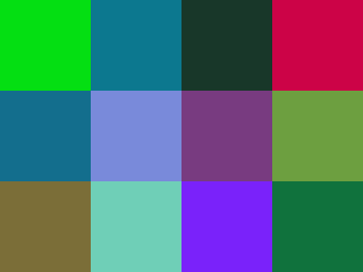
{kind=link}
Napíš funkciu
styrikrat(obr), ktorá dostane obrázkový objekt a vyrobí z neho novy: tento bude mať rovnaké rozmery ako pôvodný obrázok, ale bude štyrikrát obsahovať pôvodný obrázok zmenšený na polovicu. Napríklad:>>> obr = Image.open('macka.png') >>> obr1 = styrikrat(obr) >>> obr1.show() >>> styrikrat(obr1).show()
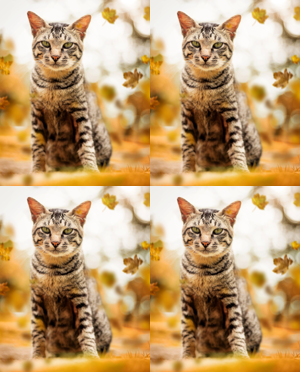
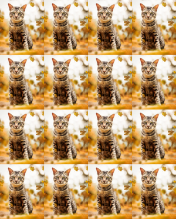
{kind=link}
{kind=link}
Obrázok
'papagaj.png'niekto rozstrihal na štyri časti a nejako ich navzájom pomiešal. Prečítaj tento obrázok a vyrob z neho súbor'papagaj1.png', v ktorom budú všetky časti na svojom mieste.>>> Image.open('papagaj.png').show() >>> novy = ... >>> novy.show()
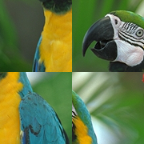
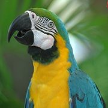
{kind=link}
{kind=link}
Napíš pythonovský skript, ktorý prečíta obrázok
'prasiatko0.png'a priesvitné časti nahradí červenou farbou. Výsledný obrázok uloží do súboru'prasiatko1.png'. Skús pomocou jedného for-cyklu vytvoriť aspoň 5 obrázkových súborov ('prasiatko1.png','prasiatko2.png','prasiatko3.png', …), pričom každý z nich bude mať priesvitné časti nahradené nejakými inými farbami (napríklad'red','blue','green', …)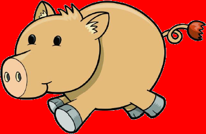
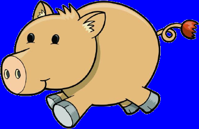
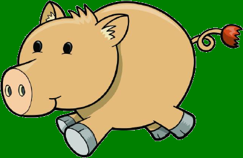
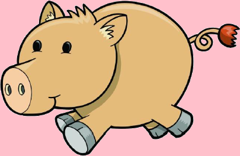
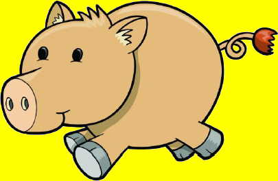
{kind=link}
{kind=link}
{kind=link}
{kind=link}
{kind=link}
Napíš funkciu
vymen(obrázok), ktorá navzájom v obrázku vymení jeho ľavú a pravú polovicu. Funkcia nemodifikuje pôvodný obrázok, ale vráti nový s vymenenými polovicami. Napríklad:>>> vymen(Image.open('tiger.png')).show()
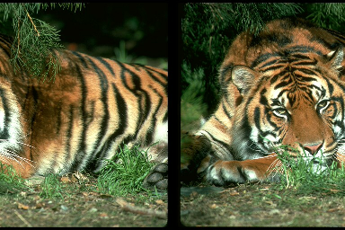
{kind=link}
Napíš funkciu
vycentruj(obr, sirka, vyska), ktorá z daného obrázka vytvorí nový s rozmermi(sirka, vyska). V tomto novom obrázku sa bude v jeho strede nachádzať zadaný obrázok (zvyšok bude priesvitný). Ak by sa tam nevošiel (je príliš veľký), tak z neho bude vidieť len zodpovedajúcu časť z jeho stredu. Napríklad:>>> obr = Image.open('tiger.png') >>> vycentruj(obr, 500, 500).show() >>> vycentruj(obr, 150, 200).show()
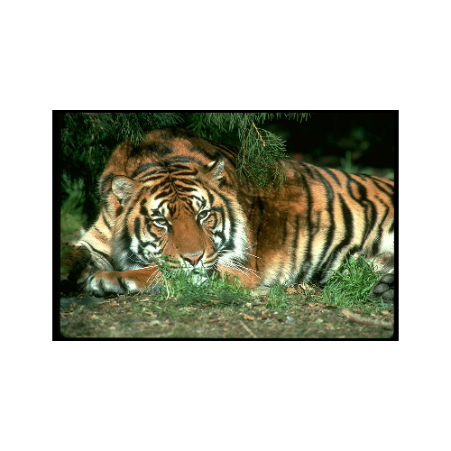
{kind=link}
{kind=link}
Napíš funkciu
strihaj(obr, n), ktorá rozstrihá zadaný obrázok nanrovnako-širokých častí (po stĺpcoch) a všetky takto rozstrihané časti vráti ako zoznam obrázkov. Na otestovanie môžeš použiť obrázkové súbory'pismena.png'a'cislice.png's 26, resp. 10 obrázkami.
Napíš funkciu
zlep(zoz), ktorá zlepí vedľa seba obrázky zadané v zoznamezoz(napríklad sú výsledkomstrihaj()). Predpokladáme, že všetky obrázky vzozsú rovnako veľké. Výsledný obrázok vráti ako výsledok funkcie. Otestuj:>>> zlep(strihaj(obr1, 5)[::-1]).show()
Pre dva obrázkové súbory
'pismena.png'a'cislice.png'napíš funkcie:velky_text(text)- vytvorí jeden obrázok z písmen v danom texte (iné znaky ignoruje), t.j. text rozoberie na písmená a výsledný obrázok poskladá zo zodpovedajúcich obrázkov v rozstrihanom súbore'pismena.png';velke_cislo(cislo)- podobná akovelky_text- dané číslo rozloží na cifry a poskladá z nich jeden obrázok zlepením obrázkov cifier zo súboru'cislice.png'
Zrejme v oboch prípadoch využiješ funkcie
strihajazlep. Otestuj:>>> velky_text('Python').show() >>> velke_cislo(2**100).show()
Vylepši funkciu
zlep(zoz)tak, aby fungovala správne aj pre obrázky v zozname, ktoré nie sú rovnako veľké. Funkcia si najprv vypočíta maximálnu šírku aj výšku, aby mohla jednotlivé obrázky rozložiť vo výslednom obrázku rovnomerne. Výsledný obrázok bude mať tie časti, ktoré nie sú pokryté obrázkom, priesvitné. Dávaj pozor na to, že príkazobr.pastemusíš zavolať inak pre obrázky s priesvitnosťou (obr.mode == 'RGBA') a v inom prípade.Malo by korektne fungovať aj opätovné rozstrihanie takto zlepeného obrázka. Napríklad, pre rôzne veľké obrázky:
>>> obr1 = ... >>> obr2 = ... >>> obr3 = ... >>> zoz = strihaj(zlep([obr1, obr2, obr3]), 3)
Zoznam
zozteraz obsahuje tri rovnako veľké obrázky, v ktorých sú pôvodné obrázky (obr1,obr2aobr3) vycentrované.
Napíš funkciu
otacaj(obr, n), ktorá vytvorín-prvkový zoznam obrázkov. Každý vznikne otočením pôvodného obrázka o nejaký uhol tak, že tieto otáčania budú rovnomerne všetkými smermi (napríklad pren=5budú tieto uhly0,72,144, …). Dbaj na to, aby sa pri otáčaní nestratili žiadne časti obrázka (expand=True) a oblasti, ktoré otáčaním pribudnú boli priesvitné. Výsledný zoznam vráti ako výsledok funkcie. Otestuj:>>> zlep2(otacaj(Image.open('pyton.png'), 6)).show() >>> zlep2(otacaj(Image.open('tiger.bmp'), 3)).show() >>> zlep2(otacaj(Image.open('vtak.gif'), 15)).show()
Napíš funkciu
strihaj_gif(obr), ktorá vráti zoznam obrázkov - fáz animácií. Predpokladáme, žeobrje vo formátegif. Dbaj na to, aby sa zachovala priesvitnosť jednotlivých fáz. Otestuj:>>> zlep(strihaj_gif(Image.open('potvorka.gif'))).show() >>> zlep(strihaj_gif(Image.open('vtak.gif'))).show() >>> zlep(strihaj_gif(Image.open('kraca.gif'))).show()
Napíš funkciu
zapis(zoz, meno, pripona), ktorá v parametrizozdostáva postupnosť obrázkov a všetky tieto obrázky uloží do súborov s menami ‚meno0.pripona‘, ‚meno1.pripona‘, ‚meno2.pripona‘, … Otestuj napríklad:>>> zapis(strihaj_gif(Image.open('vtak.gif')), 'temp/vtak', 'png')
V priečinku
tempby malo vzniknúť 8 obrázkových súborov s menamivtak0.png,vtak1.png,vtak2.png, … Môžeš predpokladať, že priečinoktempuž existoval predtým. Ak by si chcel takýto priečinok vytvárať vo funkcii, môžeš použiť:import os os.makedirs('temp', exist_ok=True)